3D Models in AdvantageScope
Other documentation and downloads
It is extremely important to look at these documents, especially during your first creation of an articulated component!
The following are other pieces of documentation needed to create models and articulate components in AdvantageScope. A few things are also mentioned here, but that doesn't mean you should skip these!
This is the main resource besides this very file you are in now that explains implementing 3D models in AdvantageScope, made by team 6328.
NOTE: Do NOT just watch the video regarding 3D Robot models before creating your own model. Many things in the video are not explained, because you are supposed to read the documentation alongside it!
The java documentation regarding the different methods used for Pose 3d.
This program is the middleman in between Onshape and AdvantageScope.
Where to get models
The models for our robot and its components are found in our shared Onshape library.
NOTE: In order to access this library, your account needs to be invited. In order to get invited, talk to the mentor who teaches the CAD class in the fall, who sends the invites via email.
When you sign into Onshape, you should see this library if you were correctly invited and also accepted the invite:
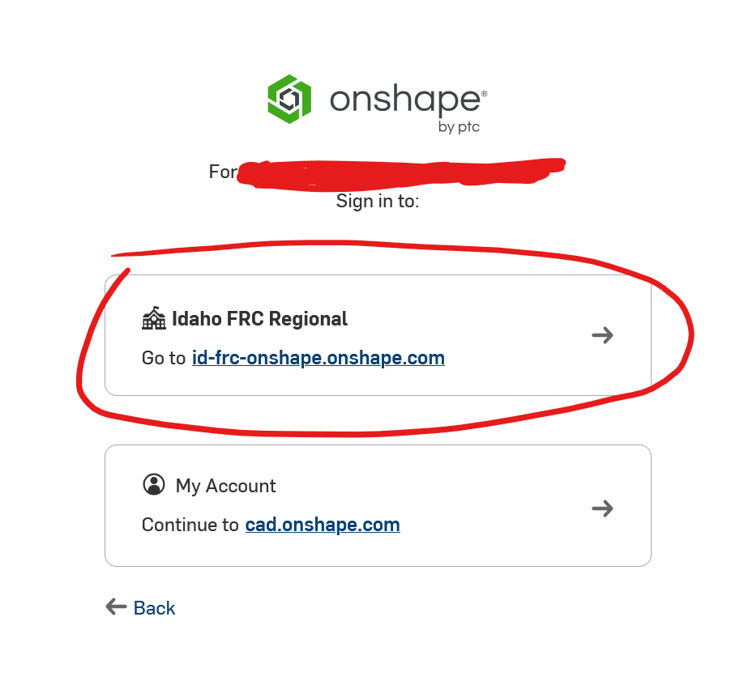
Exporting Models from Onshape
Exporting models is a fairly simple process.
First, click on the model (typically in a folder labelled that robot's year)
Go to the main assembly for the part you are trying to import, specifically one of the files with a cube containing a shaded section.
right click the file in the tab at the bottom of your screen, and then press Export.
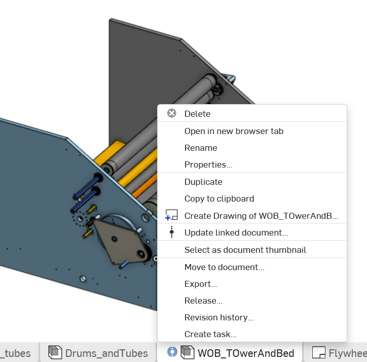
Export the file as a STEP file. You will need to make this glb file in a second, but Onshape does not offer glb exporting.
You do not really need to do anything else in the export menu apart from exporting to a STEP file.
Configuring and exporting in CAD Assistant
Once you have your file exported from Onshape, you can't quite put it into your AdvantageScope assets folder yet. Instead, you must download CAD Assistant, a program that lets you export to glb files.
This program is also what we use for extra configuration of the models. (ie. Adding a non-moving component onto the base model). However, CAD Assistant is very limited in this aspect, making it hard to work with at times.
In most cases, you can simply open up your STEP file, press the Save icon (floppy disk on left hand side), and press export as a glb file. At times (such as the example previously mentioned) though, you might need to move components around.
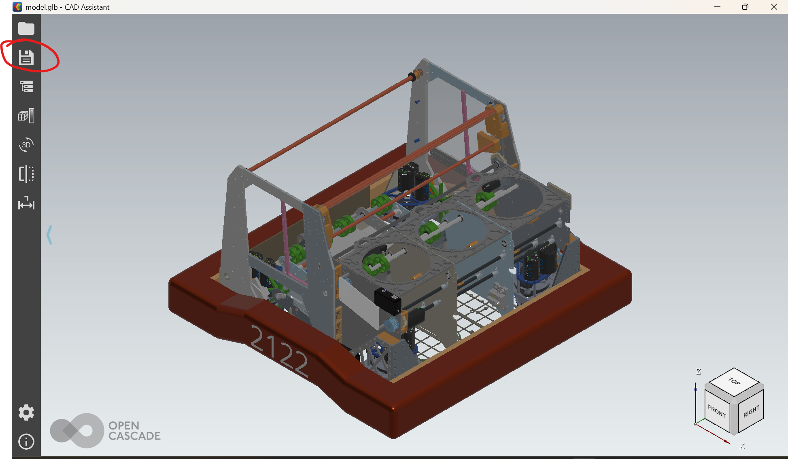
Location of the Save button
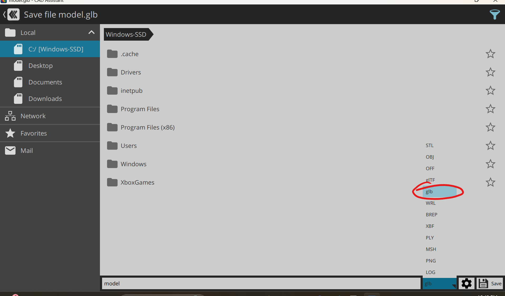
What to export as
NOTE: if you did indeed read the AdvantageScope documentation closely, you might have seen a mention of glTF files. Don't export to your AdvantageScope Assets folder in this format. AdvantageScope reads files in binary form, and glb is the binary form of glTF. Importing as a glTF file will make it unreadable by AdvantageScope, so don't do it!
Once exported, the file will not be able to be viewed when clicked in the VS code editor! Do not panic. This does not mean its broken, nor does it mean you should be using a glTF file instead. The VS code editor just cant process glb files, since they are in binary.
Combining files in CAD Assistant
The base model for our robot should contain all parts that don't need to move separately from the robot (For example, the 2026 robot model's drivebase does not have any parts that move, while the picker can rotate up and down)
This often means that you need to combine other files into one another to put them on one model. To do this. Open up your current model.glb.
Then, select the folder icon on the left side and click the button labelled "Add to Current Document" on the bottom tab of the page. You must do this BEFORE opening up the file you are trying to combine your base model with.
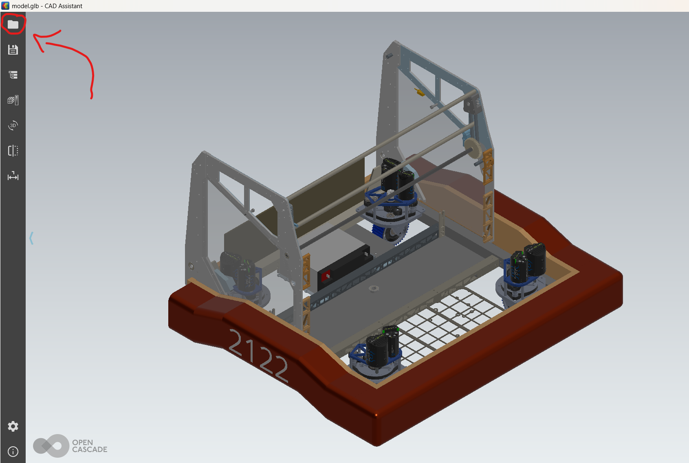
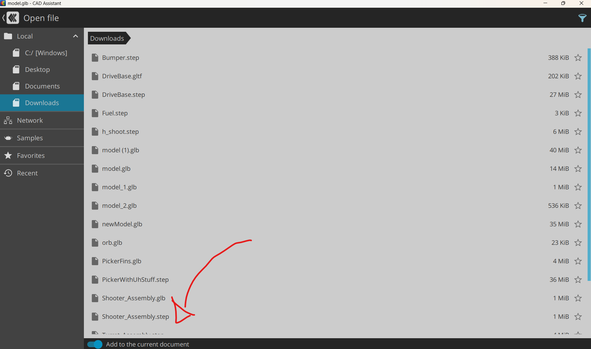
Click on the file you are trying to combine, and it should appear on your base model. If it isn't where it should be, see the tutorial below.
Moving things around in CAD Assistant
This can be done with a STEP file just exported or, a glb file currently in the code.
As CAD Assistant is a relatively simple software designed for exporting, it doesn't have the best tools for moving around the models, so it can be irritating to do so. It's recommended to avoid moving the components around when you can, for example by exporting the RobotMaster, then individually deleting the parts that need to move separately from the drivebase when creating your model.glb.
First, click any piece of the component you are trying to move. Press the button on the right-hand side that when hovered on reads "Select Parent."
You should now have the entire component you are trying to move selected (Typically, this is from another file that you merged in). The selected sections will become more gray when selected.
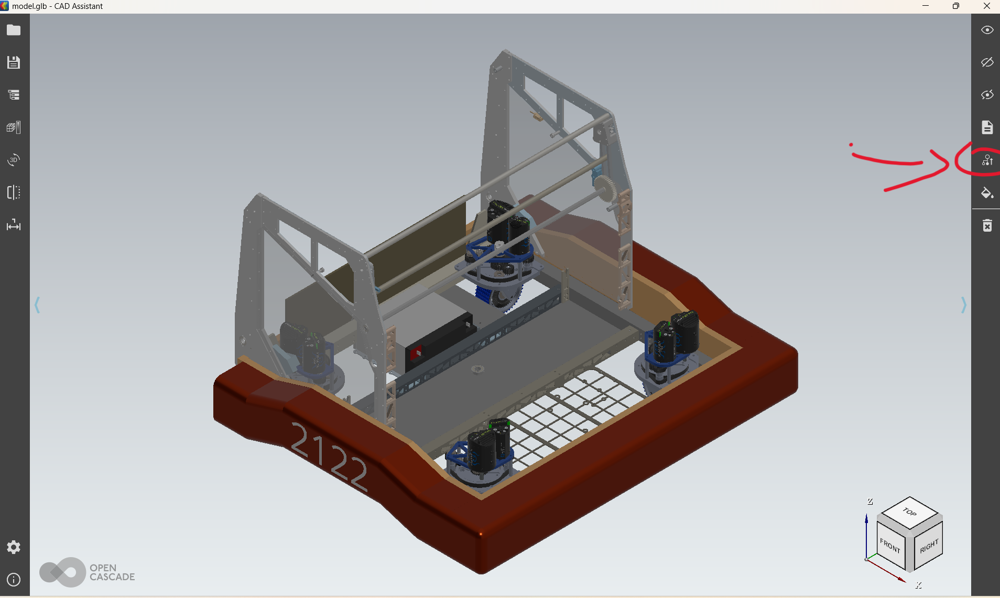
In the photo above, the side walls are selected.
If selecting the parent does not work (for example, it selects every piece of your model rather than one component), press shift while clicking each individual part you want moved.
After all parts of the component you want to be moved are selected, click the icon directly above the select parent icon. Expand location, and then press identity.
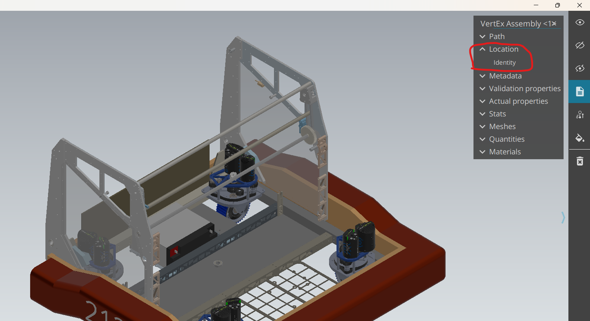
Arrows for the X, Y, and Z axis should appear in red, green and blue. If these appear on the main model and not the part(s) you are trying to move, press Identity again. You can use these arrows to position the part to where it needs to go.
Unfortunately, CAD Assistant is very finnicky about this part. You can position the component with these arrows, but it will not save this position. to get it to save the position, you must click a point in space to move the component to.
On occasion, it will not follow the point that you clicked, and instead move to the bottom of your model. This makes it take a lot of patience to get it to get to the point you want it to at times. As previously stated, try to avoid moving things around in CAD Assistant when you can.
DO NOT FORGET TO SAVE YOUR CAD MODELS WHEN DONE!
Saving your model is the same process as Exporting your file as a glb for the first time. Of course, make sure it is still a glb file when you save!
Folder and Files
Next, create a new folder in VS Code. In the 2026 code for example, this folder is named AdvantageScopeAssets, and is just under 2026_timetator, not nested in another folder like src. This is where your assets will be held. Inside that folder, create another new folder. If you do not do this, then AdvantageScope cannot read the files. You must name the nested folder Robot_, and then whatever name you like. In your Robot_ folder, it will have the config.json, as well as all your models. For details on setting up your config.json, watch the video on this page here.
Naming Conventions and Models
A component should only be its own model if it moves separately from the robot, such as a rotating picker or turret. Each of your models should be named as such:
-
model.glb - This is your base model, where every part that doesn't move separately goes. This includes things like the drivebase and other parts that don't rotate or move up and down. If you need to add another part in order to update this, see Combining Files in Cad Assistant.
-
model0.glb - This is your first separately moving component. From 0, the number increases (ie: model1.glb, model2.glb...)
NOTE: In your config.json, the components must be in the same order as your models. If a component's file is named model1.glb, it cannot be first in the array.
To keep track of your different models, create variables in the config.json that signify the model number and name, such as seen in the components example below.
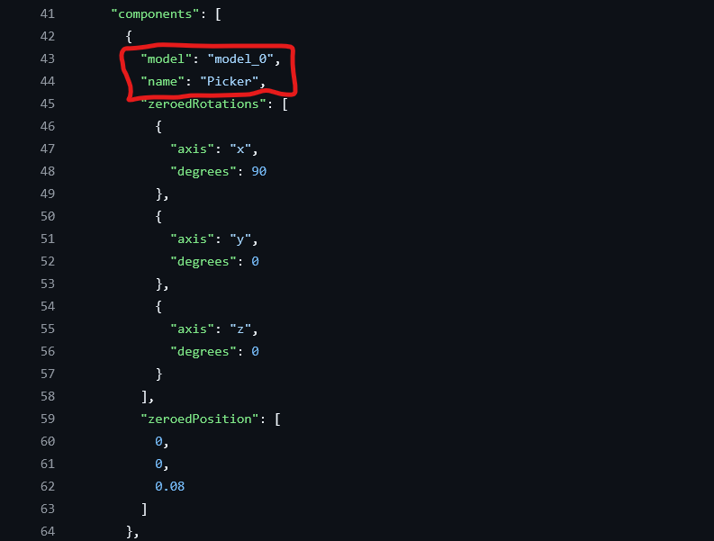
Configuring Articulated Components
Setting your Assets folder
Simulate your code and open up AdvantageScope. Click "App", and then "Use Custom Assets Folder".
Copy the path of the folder that holds your Robot_ folder, and set that as your assets folder.
Configuring base positions
Now, we get to the most important part of the process: putting your models into action. For now, put the following log into your RobotPeriodic() in Robot.java:
What this does:
- Creates what is called a pose 3d, which, as the name suggests, is the current pose of the object in a 3d space
Click the + at the top right, and then 3d field. In the bottom right corner, set the field to Axes and zoom in on the robot model. (Right now, it is likely a KitBot. We will change this in just a second)
Drag in the Drive/Pose key. Once it is in the Poses box, click the arrow icon next to its name and select the model name of your robot that you put in the config.json previously. Below the Drive/Pose key, drag your Zeroed Component Poses in.
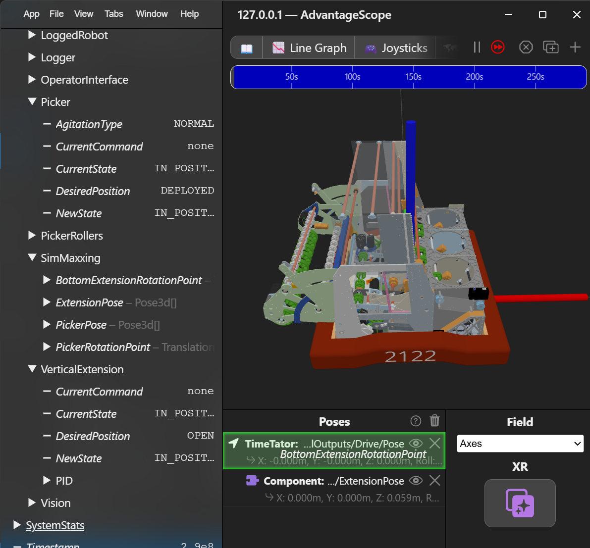
Made sure that when you are dragging it in, only the Drive/Pose is highlighted, not the entire Poses box.
Once dragged in, if the icon is green and says "Vision Target", click on it and change to a component.
Drag one of these in for every component you are trying to add to your 3D model, and make sure they are where they should be on the robot. If they aren't, go back and tweak your config.json file.
Movement
This portion requires a lot of information from the java docs methods section for Pose3d, linked here
Once your models have been configured using Zeroed Component Poses, the next step is to make them move.
In the log() of the subsystem of the component you want to move, you need to do the following things:
-
Make sure that the Robot is being simulated, so the code doesn't create a bunch of things it doesn't need while the robot is actually running
- Below is how to check that your robot is not currently running in real life. This can also be used for replay:
-
In the constants file of your subsystem, create a Translation 3D named something along the lines of
SUBSYSTEM_STARTING_POINTand set it to 0,0,0. You will adjust this in a minute. -
Below is an example of what your
Then, depending on if your component rotates about a point or moves up/down or left/right, you do the following things:SUBSYSTEM_STARTING_POINTcould look like, in this case with a rotating picker:
Configuring Rotation
Rotation - Finding the point of Rotation
- Create a double called timer and set it to timer.getTimeStamp()
- This creates a constantly increasing double
- Create a `Rotation3d` and set it to time
- this will make the component rotate in a full circle, which helps to pinpoint the point of rotation
- Create a `Pose3d` and set it to `k.Zero`, then make it rotate around (your subsystem's point of rotation, which is the value `Rotation3d` you just made) (for more context about .rotateAround(), see the [Pose 3d documentation](https://github.wpilib.org/allwpilib/docs/release/java/edu/wpi/first/math/geometry/Pose3d.html))
- Log said `Pose3d`
- Example:
- Once your component is rotating in a circular motion, use trial and error to move your component to the point on the robot you want it to rotate about. Start by making big changes to your starting point (such as changing a coordinate value by 0.1), and as you get closer to the point, make smaller and smaller adjustments. This is an example of a rotation point on a rotating picker. Notice both positive and negative values, as well as the fact that these numbers are pretty small. This is because the measurements are in meters, relative to the bottom center of the robot.
double timer = new timer.getTimeStamp();
log(){
if (Constants.ROBOT_MEDIUM != RobotMedium.REAL) {
Rotation3d rotationPoint = time;
Pose3d componentPose = Pose3d.kZero.rotateAround(SubsystemConstants.COMPONENT_ROTATION_POINT, rotationPoint);
Logger.RecordOutput("3D Models", new Pose 3d[] {componentPose});
}
}
Rotation - Making it move as it does in real life
- Now, set the value of the Rotation3d to the angle of your subsystem, and ensure the angle is in units of radians
- In the example below, rotations are converted to radians by multiplying by 2pi.
Configuring Translation
Translation - Finding the starting point
- Create a Translation 3d, setting the X, Y, and Z values to your startingPoint.getX(), startingPoint.getY(), and startingPoint.getZ() respectively.
- Use trial and error to find the starting point, beginning with large adjustments in the values and slowly refining your SUBSYSTEM_STARTING_POINT
- values for the X, Y, and Z coordinates are in meters relative to the robot, so a "big" adjustment would be considered to be 0.1 or 0.2 in either a negative or positive direction.
Translation - Making it move as it does in real life
- Simply add inputs.currentPosition to whichever one of the startingPoint.get X(), Y(), or Z() values
- if the component is moving far too much and the subsystem doesn't use canonical units, use trial and error to find a coefficient that moves it the correct amount.
Testing
- Bind the subsystem moving to a new desired position to a button on the driver controller and test it out in simulation!
- use
driverController.button().onTrue(...);as opposed towhileTrue, and use different buttons to set it to different positions for best testing
- use
The Final Product
Hopefully, you should have a 3d Simulation of the robot! Here is an example of what it should look like, with parts able to move up and down when you make the desired position of their subsystems change.
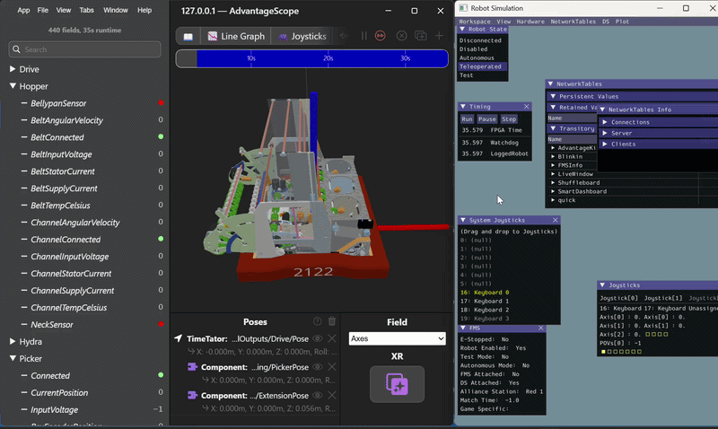